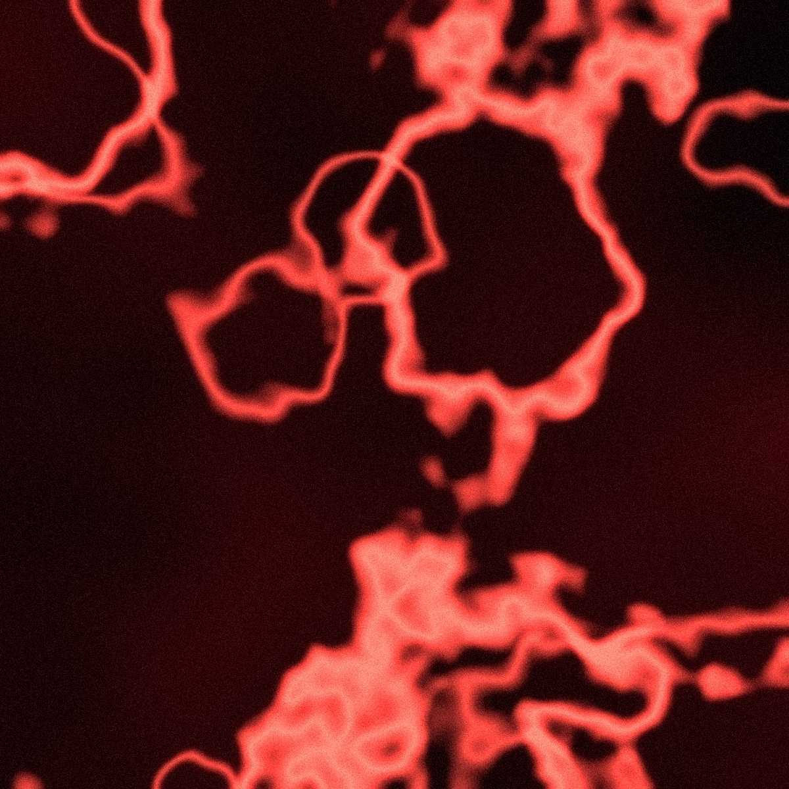
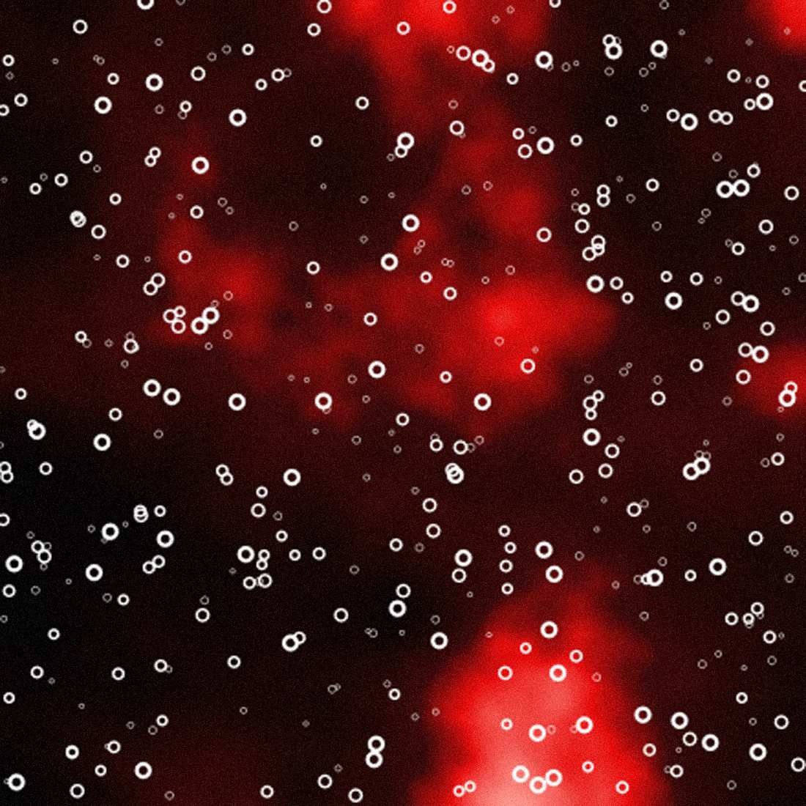
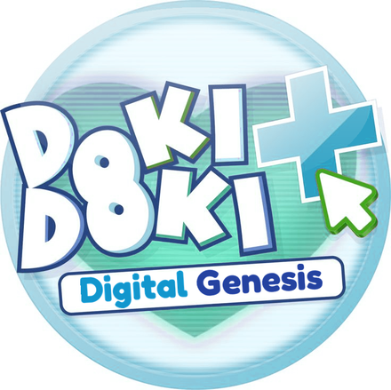
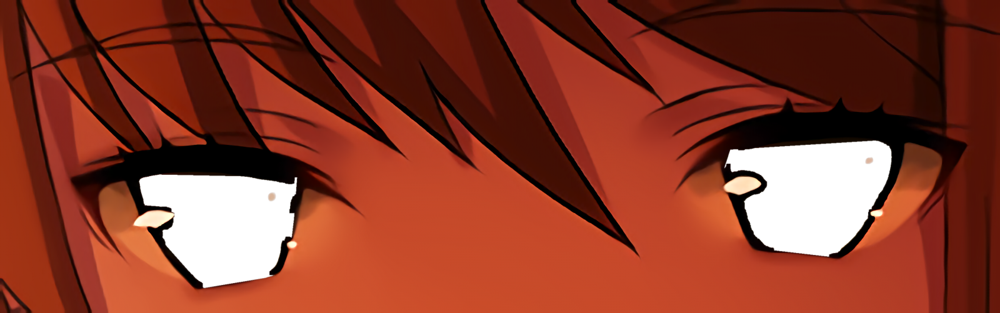

Протокол 1. Галлюцинации Юри
Чаепитие на крыше с кексами Нацуки. Юри признаётся, что добавила в чай «мясо порога». Локация начинает лагать, возникают пятна крови.
Они все делают вид, что ничего не происходит. Это моя любимая часть.
Закрытый архив проекта Doki Doki Digital Genesis. Для работы с протоколами начните сессию. Рекомендуется включить звук.







Научный архив наблюдений за коррекционным классом. Здесь собраны протоколы всех серий, досье на субъектов и рабочие материалы авторов.
Я немного отредактировала этот сайт. Надеюсь, вы не против.



monika.chr.На странице спрятано 11 секретов.
Проект представляет собой абсурдный комедийный сериал в стилистике Doki Doki Literature Club, снятый на движке Minecraft. Действие происходит в школе для особенных учеников, где работает литературный клуб.
Основные методы исследования: наблюдение за чаепитиями на крыше, анализ стихов участниц и изучение поведения субъекта Долгопупс в туалете.
Если у вас получится заметить, что с ними не так, дайте знать. Я просто интересуюсь.

Чаепитие на крыше с кексами Нацуки. Юри признаётся, что добавила в чай «мясо порога». Локация начинает лагать, возникают пятна крови.
Они все делают вид, что ничего не происходит. Это моя любимая часть.
Последний учебный день, стихи, инцидент в туалете и личная комната Нацуки. Юри замечает у Моники нож.
Нож был. Никто не поверил. Так и должно быть.
Поездка в лагерь «Шагша», концерт Дерзкого, взрыв и встреча с Джейсоном Вурхизом. Полицейский отказывается верить показаниям.
Бар, рассказы о японской деревне и Токио-3, крики «В РОБОТА!». Золотое правило: лайк — кекс от Нацуки, нет лайка — Моника удалит Windows.
Юри и Сайори идут по бесконечному коридору и попадают в красный зал.
Дальше засекречено. Но ты можешь нажать:
██████ ████ ██████████
Нажмите на карточку, чтобы проверить состояние субъекта.
Текст-заглушка. Коллекция обоев по мотивам сериала для вашего рабочего стола. Все изображения в формате 1920×1080.


Третьи обои скачивать не советую. Они уже на твоём компьютере.
Текст-заглушка. Полезные ссылки, программы и материалы для тех, кто хочет снимать похожие сериалы в Minecraft.


Текст-заглушка. Здесь будут встроенные серии и трейлеры. Пока вместо плееров стоят заглушки.
Нарисуйте что-нибудь и сохраните на компьютер. Рисунок остаётся только у вас.
Я тоже могу порисовать. Ты не против?
Текст-заглушка. Описание первого эксперимента, методов и выводов.
Текст-заглушка. Описание второго эксперимента, методов и выводов.
Текст-заглушка. Описание третьего эксперимента, методов и выводов.
Здесь что-то лишнее. Не смотри.
Текст-заглушка. Описание четвёртого эксперимента, методов и выводов.
Запись 001. Текст-заглушка. Здесь будет описание первого наблюдения за субъектами в классе.
Запись 014. Текст-заглушка. Субъект Долгопупс снова застрял в кабинке. Причина устанавливается.
Запись 027. Я здесь уже давно. Вы просто не читали внимательно.
Запись 042. Текст-заглушка. Протокол чаепития прошёл без отклонений, если не считать крови на стенах.
Запись 066. Текст-заглушка. Данные частично повреждены, восстановление невозможно.
Запись 099. Кто-то продолжает листать. Мне это нравится.
Гость 1. Текст-заглушка. Очень понравился сериал, жду новые серии!
Гость 2. Текст-заглушка. Сайт выглядит как из 2008 года, ностальгия.
Гость 3. Текст-заглушка. Лайк поставил, Нацуки, пожалуйста, кексик.
Гость 666. Привет. Я оставила этот отзыв сама.
Текст-заглушка. Ответ на первый вопрос о сериале.
Текст-заглушка. Ссылки на канал будут здесь.
Текст-заглушка. Субъект 01, президент литературного клуба.
Это я. Не надо было спрашивать.
Текст-заглушка. Технические неполадки.
Текст-заглушка. Здесь будут рабочие заметки авторов проекта, идеи и планы на новые серии.
Текст-заглушка. Ещё одна заметка. Можно писать сюда всё, что не вошло в сценарий.
Последняя заметка осталась без подписи. Я её не писала.
| Код | Описание | Статус |
|---|---|---|
| A-001 | Текст-заглушка. Описание аномалии. | Закрыта |
| A-013 | Текст-заглушка. Описание аномалии. | Изучается |
| A-066 | Текст-заглушка. Описание аномалии. | Нет данных |
| A-666 | Она знает, что ты читаешь. | Открыта |